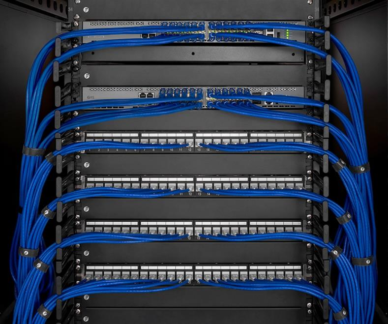
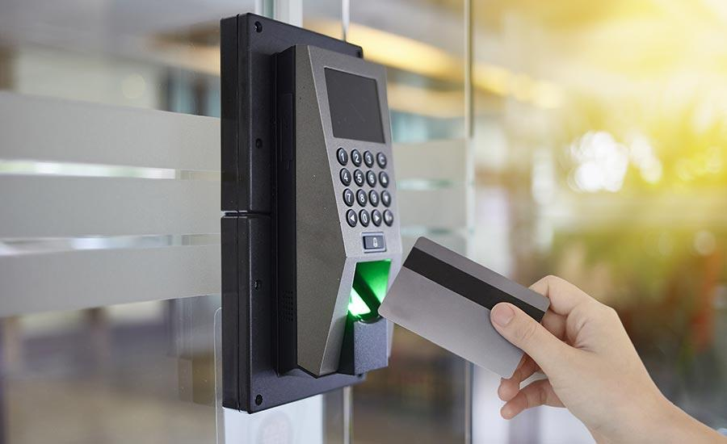

<!DOCTYPE html>
<html lang="en">

<head>
  <meta charset="utf-8">
  <meta http-equiv="X-UA-Compatible" content="IE=edge">
  <meta name="viewport" content="width=device-width, initial-scale=1.0">
  <title>We Network LLC | Home</title>
  <!-- Font Awesome Link -->
  <link rel="stylesheet" href="https://pro.fontawesome.com/releases/v5.10.0/css/all.css"
    integrity="sha384-AYmEC3Yw5cVb3ZcuHtOA93w35dYTsvhLPVnYs9eStHfGJvOvKxVfELGroGkvsg+p" crossorigin="anonymous" />
  <!-- jquery Link -->
  <script src="https://code.jquery.com/jquery-3.5.1.js"></script>
  <!-- Owl Carousel Link -->
  <script src="https://cdnjs.cloudflare.com/ajax/libs/OwlCarousel2/2.3.4/owl.carousel.min.js"></script>
  <link rel="stylesheet" href="https://cdnjs.cloudflare.com/ajax/libs/OwlCarousel2/2.3.4/assets/owl.carousel.min.css">
  <!-- Boxicons CDN Link -->
  <link href='https://unpkg.com/boxicons@2.0.7/css/boxicons.min.css' rel='stylesheet'>
  <link rel="stylesheet" href="https://unpkg.com/swiper/swiper-bundle.min.css">
  <!-- Stylesheets -->
  <link rel="stylesheet" href="css/nav.css">
  <link rel="stylesheet" href="css/responsive.css">
  <link rel="stylesheet" href="css/style.css">
  <link rel="stylesheet" href="css/brandandservice.css">
</head>

<body>
  <nav>
    <div class="navbar">
      <i class='bx bx-menu'></i>
      <figure class="logo"><a href="#"></a></figure>
      <div class="nav-links">
        <figure class="sidebar-logo">
          <span></span>
          <i class='bx bx-x'></i>
        </figure>
        <ul class="links">
          <li><a href="index.html">HOME</a></li>
          <li>
            <a href="#">Services</a>
            <i class='bx bxs-chevron-down htmlcss-arrow arrow  '></i>
            <ul class="htmlCss-sub-menu sub-menu">
              <li><a href="telecom.html">Telecom</a></li>
              <li><a href="energy.html">Energy</a></li>
              <li><a href="enterprise.html">Enterprises</a></li>
              <li><a href="professionalservices.html">Services</a></li>
            </ul>
          </li>

          <li><a href="project.html">Projects</a></li>
          <li><a href="gallery.html">Gallery</a></li>
          <li><a href="clients.html">Clients</a></li>
          <li><a href="team.html">Team</a></li>
          <li><a href="career.html">Careers</a></li>
          <li><a href="about.html">ABOUT US</a></li>
          <li><a href="contact.html">CONTACT US</a></li>
        </ul>
      </div>
    </div>
  </nav>
  <section class="our-values">
    <h1>Enterprise ICT/ELV Solutions</h1>
    <p>At WENET, we offer the most comprehensive ICT and ELV product portfolios ranging from transmission and
      radio communications to voice and data networks including CCTV, PAGA and Access Control SystemsAt WENET,
      we offer the most comprehensive ICT and ELV product portfolios ranging from transmission and radio
      communications to voice and data networks including CCTV, PAGA and Access Control Systems</p>
    <hr class="no-margin">
  </section>
  <section class="our-values">
    <h2>Structured Cabling</h2>
    <p>WENET offers a whole range of IT Infrastructure solutions, services & software for enterprise
      customers. From improving operational efficiency to customer responsiveness; an integrated &
      innovative networking solution is essential for your business. WENET provides an integrated
      system-based network solution that meets the needs of your organization regardless of its size.</p>
    <p>
      WENET offers a whole range of IT Infrastructure solutions, services & software for enterprise
      customers. From improving operational efficiency to customer responsiveness; an integrated &
      innovative networking solution is essential for your business. WENET provides an integrated
      system-based network solution that meets the needs of your organization regardless of its size.
    </p>
    

    <div class="two-rows">
      <div class="two-columns" id="pic-wrapper">
        
      </div>
      <div class="two-columns">
        <h3>Structured Cabling Solutions:</h3>
        <p>
          We Network is the authorized Business Partner
          and System Integrator for the R&M, 3M and Systimax Structured Cabling Solutions, leaders
          in structured cabling systems.</p> <p> We have gained expertise through our continued dedication in
          designing and execution the system architecture by expert project managers, certified
          engineers and installers. We offer design, installation, testing & commissioning of data, voice
          & fiber optic networks.</p>
        <h3>Intelligent Building Networks:</h3>
        <p> We Network provides a proven and robust
          Intelligent Building Network platform. For example, single cable solution for structured
          connectivity of data / voice /fire alarm / access control / HVAC and security systems.</p>

      </div>
    </div>


  </section>
  <section class="our-values">
    <h2>IP Telephony, PBX & Unified Communication</h2>
    <div class="two-rows">
      <div class="two-columns">
        <p>WE NETWORK bring to you a state of the art unified communication solution from
          Cisco, Avaya Unify and Huawei pioneers in providing telephony and collaborations
          solutions in Oman, focusing on providing End-to-End solutions, tailor-made to customer
          needs and requirements. </p><p>We aim for achieving the Customer Satisfaction with retaining
          the best level of Customer Support and focus in mind.</p>
        <p>Our partnership with technology leaders such as Cisco, Unify, Avaya & Huawei helps us
          to deliver a comprehensive solution to address the entire gamut of communication
          challenges and be a paradigm that leads to future breakthroughs.</p>
      </div>
      <div class="two-columns">
        
      </div>
    </div>
    <br>
    <hr class="no-margin">
    <br>
    <div class="two-rows">
      <div class="two-columns">
        <h3>Telephony Platform</h3>

        <p>WE NETWORK provides the most secure, flexible, scalable
          and complete set of line-of-business telecommunication solutions based on IP, Digital
          or Analog System for large enterprises and network from best of the suppliers as
          Avaya, Cisco and NEC</p>

      </div>
      <div class="two-columns">
        <h3>Access Control and Time Attendance System</h3>
        <p>Wide range of access control
          systems for offices and large enterprises with proximity, card and finger print readers from
          industry leaders.
        </p>

      </div>
      <div class="two-columns">
        <h3>Digital Voice Recording</h3>
        <p>
          Total Recall is a fully self-contained digital voice recorder
          that combines simplicity of use, 10,000 hours of on board storage and convenient
          capacities of 4 - 32 channels to create an invaluable tool for everyone who does
          business by telephone, or whose radio communications are mission-critical.
      </div>
    </div>
    <br><br>
    <div class="two-rows">
      <div class="two-columns">
        <h3>Contact/Call Centre Solutions</h3>
        <p>VOIP communication technology is
          revolutionizing
          call centre industry and we aim in enabling outsourcers across the globe to reap great
          benefits from the VOIP revolution. WE NETWORK provides internet Call Centre
          solution using VoIP (Voice over Internet Protocol) for Call Me, online chat, escorted
          browsing, e-mail and fax messaging applications. We also provide IVR Solutions
          including Banking, Tele Bill Payments, School Fees, DD & Fund transfer
        </p>
      </div>
      <div class="two-columns">
        <h3>Video & Audio Conferencing</h3>
        <p>
          WE NETWORK video conferencing provides you
          with quality video conferencing for applications including telemedicine and distance
          learning. WE NETWORK is a premier service provider of audio conferencing
          services throughout Oman. The Audio conferencing system has a triangular handsfree speakerphone with 3 built
          in
          microphones offering full 360 degree room
          coverage
        </p>
      </div>
      <div class="two-columns">
        <h3>Interactive Voice Response (IVR Unit / CTI Solution)</h3>
        <p>Based on the AVAYA
          Intuit Conversant IVR platform, WE NETWORK provides IVR solutions for travel,
          finance, banking, utility services and health services. WE NETWORK is a complete
          solutions provider incorporating consultancy, applications and requirement analysis,
          systems analysis and design, call flow design etc. to configure the application
          according to the need and uses of the customers.
        </p>
      </div>
    </div>

  </section>
  <section class="our-values">
    <h2>Data Networking, security and Wireless LAN</h2>

    <figure> </figure>
    <br>
    <div class="two-rows">
      <div class="two-columns">

        <h3>Data Networking Solutions</h3>
        <p>
          WE NETWORK provides the complete design of
          segmented and partitioned Data Network back bone which comprises of core access and edge
          switching. Modern day ELV networks adopts IP technology for data communication,
          security, access control, telephony, IPTV and digital signage applications. However they
          needed differentiated and segmented architecture to ensure smooth functioning. The design
          can be optimized with State of the art SDN. (Switched Data Networks)
        </p>

      </div>
      <div class="two-columns">

        <h3>Intelligent Building Networks</h3>
        <p>
          WE NETWORK provides the complete design testing
          and implementation of Wireless communication solutions from leading global vendors for
          wireless to enable smooth transmission of voice and high- speed last mile wireless data
          connectivity to the end user’s equipment. We analyse the user
        </p>

      </div>
      <div class="two-columns">


        <h3>Network Security & Management</h3>
        <p>
          WE NETWORK offers state of the art
          Network Security and Management tools to enable customer data to be more secured and
          manageable. Our dedication towards solution offered to implement and customize the tools
          according to the customer need put us in the top of the market.
        </p>

      </div>
    </div>
  </section>
  <section class="our-values">
    <h2>Surveillance Solutions</h2>
    <div class="two-rows">
      <div class="two-columns">
        
      </div>
      <div class="two-columns">
        <p>The global security solutions market undergoing tremendous changes with innovation and
          launching of new models every year. Our unique strategic partnership with global leaders enable
          us with strong understanding of industry challenges and cutting edge solutions that we implement
          and address most of the security requirements in all the industry sectors.</p>
        <p>WE Network LLC specializes in design, implementation and commissioning of large and
          complex Security & Surveillance systems & projects for its customers.
          We are accomplished experts in offering turnkey solutions including design, procurement,
          execution and maintenance.</p>
      </div>


    </div>
    <br>
    <h3>Security & Fire Alarm Systems</h3>
    <p>WE NETWORK offers Security & Fire Alarm
      Systems from leading manufactures like vantage U.K. and CCTV surveillance (IP and
      Analog) system solution from infinova, USA & HIKVISION Communications (IP Solution)
      for offices, public places, shopping complexes, large enterprises, banks, villas and residences
    </p>

    <h3>Metal Detector System/Body Scanner/Baggage Scanner</h3>
    <p>NETWORK offers these ranges of solutions for sensitive access areas from world renowned
      supplier Westminister (UK). We have provided our products and services to governmental
      and non-governmental organizations
    </p>

    <h3>Access Control and Time Attendance System</h3>
    <p>Wide range of access control
      systems for offices and large enterprises with proximity, card and finger print readers from
      industry leaders.
    </p>


  </section>
  <section class="our-values">
    <h2>Customer Experience Management Solution</h2>
    <p>Gone are the days when ‘over the counter’ was the only means available for the customer to
      interact with the enterprise. In the mid nineties Computer telephony Integration enabled
      customers to reach out to the enterprises through call centres. With the advent of social media
      there are multiple channels for the customer for interacting with the customer</p>
    <p>As the ways and means of accessing an enterprise grew in variety and reach, the ‘power to contact’
      shifted to the consumers. With the advent of newer digital channels such as chat, emails, social media
      platforms, the customer now decides the time and manner of communication. However, integrating
      these channels and allowing customers to interact with multiple channels yet have the context
      maintained across all touch points has been a big challenge for enterprises</p>
    <div class="two-rows">
      <div class="two-columns">
        
      </div>
      <div class="two-columns">
        <p>Multimedia contact centre to some extent enables enterprises to reach out to the customers
          through these new channels. However the meteoric rise of social media has made it very complex
          for the marketing professionals in the customer centric organizations to provide orchestrated
          communication across each and every channel in the customer engagement process. We Network
          in association with our principals Servion help Forward looking organizations in building
          customer engagement hub to orchestrate all the interaction with customers through multiple
          channels.
        </p>
        <p>The customer engagement hub (CEH) allows personalized, contextual customer engagement,
          whether through a human, artificial agent, or sensors, across all interaction channels. It reaches
          and connects all departments, allowing, for example, the synchronization of marketing, sales and
          customer service processes.”</p>
      </div>
    </div>
  </section>
  <section class="our-values two-rows-mob">
    <h2>Board Room Audio Visual Systems</h2>
    <figure>
      
    </figure>
    <br>
    <p>Modern day Board rooms well equipped with state of the art technology solutions. Board
      rooms contribute significantly to the Corporate Brand Image. WENETWORK has a wide
      array of Audio and Video solutions matching the aesthetics and acoustics.We Network
      in association with our principals Servion help Forward looking organizations in building
      customer engagement hub to orchestrate all the interaction with customers through multiple
      channels.

      <p>Modern day office premises have become more lovely with
        modern technological audio visual aids that triggers creative thoughts in the minds of
        employees, communicates values that the organization believes in and disseminates
        knowledge that enriches the community.These communication props enhance the
        brand value and builds trust in the organization. Audio Visual Systems in an
        organization encompass a broad range of solutions from a single Display in a meeting
        room to a campus environment controlled from a central control room and
        incorporating separate fibre AV networks with feeds to Broadcast and Telecom
        facilities. WE NETWORK studies the communication needs of the customers and can
        help to come up with customized design for the AV/PA/BGM systems.
      </p>

      <p>A comprehensive range of presentation and visual aids are provided that meets the
        customer requirements. These include Video Conferencing and related infrastructure,
        Single and Multiple screens of varying sizes and types as per size of room, Wired and
        Wireless Discussion/Interpretation, Networked and Distributed Audio, Control
        Systems for AV, Lighting and HVAC, Document Cameras and Smart Whiteboards,
        Digital Signage and Room Scheduling, and Customized Furniture and Lecterns. LED
        screens of varying pitch and overall size as per requirement for large facilities with
        indoor/outdoor and rental use can also be supplied with custom mounting. IPTV for
        villas, hotels and WAN distribution utilizing various distribution networks can be
        custom designed.
      </p>
      <div class="two-rows">
        <div class="two-columns">
          <ul>
            <li>Lighting Controls</li>
            <li>Digital Signage</li>
            <li>Control Rooms</li>
            <li>Board Rooms</li>
            <li>Auditoriums</li>
          </ul>
        </div>
        <div class="two-columns">
          <ul>
            <li>Meeting Rooms</li>
            <li> LED Video Walls</li>
            <li>Score Boards</li>
            <li>Media Facades</li>
            <li>Flight/Rail Display Systems</li>
          </ul>
        </div>
      </div>
      <br>
      <p>IPTV solution comprising of control system, head end with transponder, satellite
        dishes and accessories. The system work with IPTV or normal TV with STB.
        We provide HTML5 foundation software solutions for enterprise, hotel, shopping malls etc.
        It works across multiple platforms and deliver seamless user expressions across TVs,
        tablet and smart phones. Power tools are provided for branding and customization
        including graphic language set as Arabic, Hindi and Russian.</p>
  </section>
  <section class="our-values">
    <h2>Server Virtualisation</h2>
    <div class="two-rows">
      <div class="two-columns">
        
      </div>
      <div class="two-columns">
        <p>Server technology is evolving rapidly but the information processing requirements in
          every organization is growing even faster. In this scenario Virtualisation is an exciting
          business prospect. Not only does it provide substantially lower operational costs and
          increased business agility, there is also no danger of compromising your security and
          business operations</p>
        <p>
          We aim to make virtualization as easy as possible to understand, design and deploy.
          Here, in a nutshell, is what we could do for you.
          Server virtualization can dramatically reduce the number of physical servers in your
          business. This is done by enabling multiple “virtual servers” to be run on a single, or
          reduced, number of machines. Each virtual server has its own operating system and
          applications are run with users having access via the network as normal. These multiple virtual
          servers are managed via a single management layer, or “hypervisor”.
        </p>
      </div>
    </div>

  </section>
  <section>
    <h2>Storage Virtualization</h2>
    <p>With storage virtualisation, storage capacity is completely removed from the individual
      user or server. Instead, it is deployed in a single or shared pool. Storage capacity is
      allocated to, and accessed by, the user or server via the network and can be adjusted to
      meet demand at any given time. Proactively managed by the IT team, disk space can be
      fully utilised without wastage. The result? Capacity planning, data classification by
      importance, backup and restore, and peak-time balancing all become easier.
    </p>
  </section>
  <section class="our-values">
    <h2>Data Virtualisation</h2>
  
        <h3>Data Centre</h3>
        <p>
        WE NETWORK offers complete range of Data Centre
        integration Solution which comprises of integration of cabinets, power supply and
        distribution systems. Cooling systems, cabling systems, environmental monitoring
        systems, UPS, management software and other sub systems.
        </p>
     
        <h3>Prefabricated Data Centre</h3>
        <p>The prefabricated all-in-one data centre solution
        function as a foundation for cloud computing in enterprise data centres. It meets the
        requirements for environmental protection, saving energy, and fast deployment. In
        addition it has distinct advantage in scenarios such as distaster relief operations, oil
        exploration and enterprise data management.
        </p>
        <h3>Server Management Software Solution</h3>
        <p>
        We offer a new generation data
        centre management system launched by Huawei. It manages the real time data and
        status of various datacentre facilities including power, environment, AC, CCTV,
        access control etc.. It comes with an optional remote management by PAD and
        provides functional assets, capacity, energy efficiency alarms, reports etc.
        </p>


    </ul>


  </section>
  <footer>
    <section class="footer-wrapper">
      <div class="footer-column">
        <h2>Navigation</h2>
        <ul>
          <li><a href="index.html">Home</a></li>
          <li><a href="project.html">Project</a></li>
          <li><a href="gallery.html">Gallery</a></li>
          <li><a href="clients.html">Clients</a></li>
          <li><a href="Team.html">Team</a></li>
          <li><a href="career.html">Careers</a></li>
          <li><a href="about.html">About us</a></li>
          <li><a href="contact.html">Contact us</a></li>
        </ul>
      </div>
      <div class="footer-column">
        <h2>Services</h2>
        <ul>
          <li><a href="telecom.html">Telecom</a></li>
          <li><a href="energy.html">Energy</a></li>
          <li><a href="enterprise.html">Enterprises</a></li>
          <li><a href="professionalservices.html"> Services</a></li>
        </ul>

      </div>

      <div class="footer-column">
        <h2>Useful Links</h2>
        <ul>
          <li><a href="https://www.hse.gov.uk/">Health and Safety Executives</a></li>
          <li><a href="https://www.nsc.org/">National Safety Council</a></li>
          <li><a href="http://www.ilo.org/safework/countries/arab-states/oman/lang--en/index.html">Oman Occupational
              Health & Safety</a></li>
          <li><a href="https://www.pdo.co.om/hseforcontractors/Index.aspx">Petroleum Development Oman</a></li>
          <li><a href="https://www.rop.gov.om/arabic/index.html">Royal Oman Police</a></li>

        </ul>


      </div>
      <div class="footer-column">
        <h2>Follow Us</h2>

        <div class="social-icons">
          <a href="#">
            <i class="fab fa-facebook-f"></i>
          </a>
          <a href="#">
            <i class="fab fa-twitter"></i>
          </a>
          <a href="#">
            <i class="fab fa-instagram"></i>
          </a>
          <a href="#">
            <i class="fab fa-linkedin-in"></i>
          </a>
        </div>

      </div>


    </section>
    <section class=
    "footer-wrapper">
      <div>
        <a href="#">&copy Copyright WeNetwork LLC</a>  &nbsp; &nbsp; &nbsp; <a href="privacy.html">Privacy Policy</a>  &nbsp; &nbsp; &nbsp;<a href="cookie.html">Cookie Policy</a>  &nbsp; &nbsp; &nbsp;<a href=
        "#">Quality Policy</a> &nbsp; &nbsp; &nbsp;<a href="">HSE Policy</a></p>

      </div>

    </section>


  </footer>


  <script src="script/script.js"></script>
  <script src="script/brandandservice.js"></script>
  <script src="script/jsfile.js"></script>
</body>

</html>